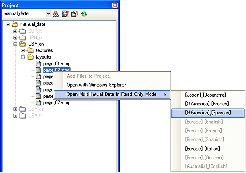

プロジェクトを指定して作業している時、編集中のプロジェクト外、もしくは同じプロジェクト内であっても編集中ではない言語のページファイルは閲覧専用ページウィンドウで開きます。
閲覧専用ページウィンドウでは、各オブジェクトが固定され、編集できなくなっています。
但し、設定内容を確認できるよう各オブジェクトの選択は出来ます。
ウィンドウの違いは、各ページウィンドウの左上のアイコンで表示されています。
| 通常のページウィンドウ | |
| 閲覧専用ページウィンドウ |
[ファイル]→[開く]でプロジェクト外のページファイルを選択すると、閲覧専用ページウィンドウで開きます。
[ファイル]→[最近使ったファイル]から、プロジェクト外のページファイルを選択すると閲覧専用ページウィンドウで開きます。
元言語を複製して、他言語データを作成します。
元言語に対応する他言語データをインポートします。
プロジェクトウィンドウで、閲覧専用ページウィンドウを開きたいページを選択し、
[マウス右クリックメニュー]→[他言語のデータを閲覧モードで開く]→[開きたい言語の選択]
